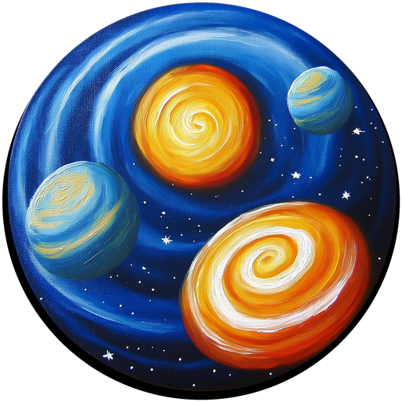

Elige
Filtra por objetivo, sector, stack y nivel de movimiento.

MotionPrompt StudioBiblioteca original · local · sin cuentas
Explora prompts completos para landing pages, apps, portfolios y experiencias 3D. Adáptalos a tu marca, cópialos y crea con tu asistente de IA favorito.
Biblioteca
Prompts estructurados con arquitectura, diseño, movimiento, responsive, accesibilidad y criterios de entrega.
Prueba con menos filtros o crea uno personalizado.
Prompt Lab
Combina objetivo, sector, lenguaje visual, movimiento y tecnología. El resultado queda listo para pegar en ChatGPT, Claude, Gemini, Lovable, Bolt o Cursor.
Resultado
Flujo
Filtra por objetivo, sector, stack y nivel de movimiento.
Completa nombre, identidad, contenido y restricciones reales.
Pega el prompt en tu editor de IA y conserva la estructura solicitada.
Ejecuta build, pruebas, accesibilidad y validación en el destino.
Local first
Favoritos y creaciones se guardan en almacenamiento local. No hay cuentas, analítica, telemetría ni envío de contenido a servidores.